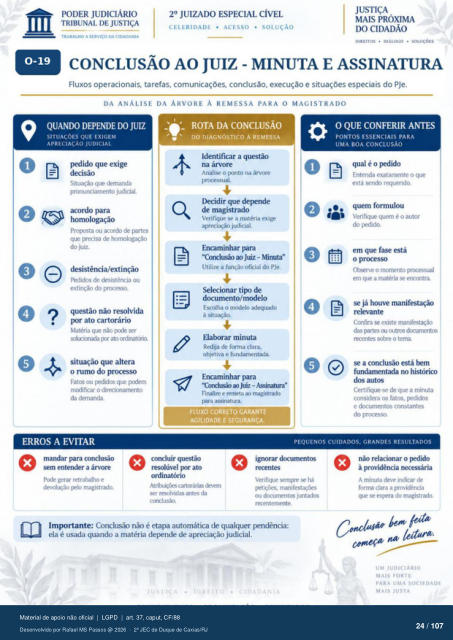

Transcrição automática em português, ainda não revisada. Confira grafia, prazos e termos jurídicos na imagem e no PDF antes de utilizar.
0-19
TRASAt.H0 A SERVIÇO DA CIDADANIA
rumo
CELERIDADE • ACESSO • SOLUÇÃO
DIREITOS • DIÁLOGO •
CONCLUSÃO AO JUIZ - MINUTA E ASSINATURA
Fluxos operacionais, tarefas, comunicações. conclusão, execução e situações especiais do PJe.
DA ANÁLISE DA ÁRVORE À REMESSA PARA O MAGISTRADO
O
QUANDO DEPENDE JUIZ
SITUAÇÕES QUE EXIGEM
APRECIACÀO JUDICIAL
Situação que demanda pronunciamento judicial.
Promsta ou acordo de partes que precisa homologaç*)
do juiz. desistência/extinção
Pedidos de ou extinção do prcxesso.
questão não resolvida por ato cartorário
Matéria que nü) rxxie ser ato (Idirut(ñ.
situação que altera Fatos ou rMiidos que vxxiern
rncxiificar o da demanda.
- ROTADA CONCLUSÃO
DO DIAGNÓSTICO À REMESSA
Identificar a questão na árvore
Analise o minto na árvore prcressual.
Ikcidir que deFnde de magistrado
Verifique se a matéria exige apreciação judicial.
Encaminhar para "C.orxhsão ao Juiz - Minuta"
Utilize a função oficial do PJe. Selecionar de
Escolha o mcxielo adequado à situação.
Elaborar minuta Redija de forma clara.
objetiva e fundarnentada. Encaminhar para
Juiz - Finalize e remeta rnagistruio
IWa assinatura
FLUXO CORRETO GARANTE
AGILIDADE E SEGURANÇA.
O QUE CONFERIR ANTES
PONTOS ESSENCIAIS PARA
UMA BOA CONCLUSÃO
qual é o Entenda exatamente o que
está sendo requerido. quem formulou
Verifique quem é 0 autor do v*dido.
em que fase está o prcxesso
o rwn•rnto prtxessual em que a rnatéria encontra.
se já houve manifestação relevante
Confira se existe das CIItr«
recentes sobre o tema. se a conclusão está
fundament" no histórico dos autos
Certifique-se de que a minuta Considera fatos. pedidos
e constantes do prcresso.
PEQUENOS CUIDADOS. GRANDES RESULTADOS
ERROS A EVITAR
sem entender a árvore Pcxie gerar retrabalho e
devolução Fio magistru•h resolúvel por
Atr•hliçüs tkvem resolvidas antes da
Verifique sernve se há Ftiçim manifestaçers
ou dcx•unrntos juntad«s r«enternente.
Imrx»rtante: Conclusão não é automática cle qualquer ela é usada quando a matéria de apreciação judicial.
não relacionar o A minuta deve indicar de
forrna clara a providência que eq*ra do magistracb
'e.m feita
UM JUDICIÁRIO
MAIS FORTE
PARA UMA SOCIEDADE
MAIS JUSTA
Ver também o infográfico original (página 24)
